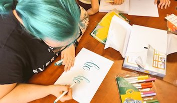

Sudweb 2017
One of the things I love most about this people-friendly conference in the South of France is their day
dedicated to open workshops.
Same people, barely any rules, and it's up to the audience to self-organize and provide the content.
A few words about the conference
Sudweb is a conference held in a different city in the South of France every year. It is committed to web culture and values more than it is about niche subjects or blockbuster talks. It celebrates and reflects a culture of experimentation, people’s trajectories and their constant learning. To give you a quick notion of the diversity of subjects, here are some of last year's talks :
- Dear Data, a personal data tracking & transatlantic postcard project by Stephanie Posavec & Giorgia Lupi
- Unexpected musical instruments, a talk about experimental musicians who turn objects into musical instruments, including web browsers.
- International collaboration and treating gigantic amounts of data in the Panama Papers by the International Consortium of Investigative Journalists.
Open workshops
Lettering workshop © Marie Guillaumet The second day is a testament to the richness of the people attending. Advanced workshops in user testing, discussions around alternative work structures and cultures / how they pan out in real life, a workshop and exchange around cryptography… It could be anything. Last year, I attended a workshop offering to initiate us to lettering. It was nice to swap brain juice for something more hands-on.
This year, to honor that idea, echo Dear Data's use of postcards, share my newfound love for paper embroidery (fast, easy, gratifying!), I offered a postcard embroidery workshop. It's always funny to see people who work in the web use their eyes, their hands and their brains everyday to create savvy platforms or infrastructures get a little panicky in front of a needle and thread. Time to stick it to gender-conforming stereotypes.
 ... Alright, so maybe it was mostly ladies. Maybe just one guy showed up. Phew, still work to be done.
It was good fun though, and people were quite keen on trying to embroider emojis. In the 45 minutes for the workshop, there was a beginning to an eggplant, a lemon, a kitty paw, some lettering, a crab, Sudweb logos...
The point being that it's not as scary as it sounds. Most of the participants were more than halway through their project and got to take it home.
Embroidery gymnastics:
... Alright, so maybe it was mostly ladies. Maybe just one guy showed up. Phew, still work to be done.
It was good fun though, and people were quite keen on trying to embroider emojis. In the 45 minutes for the workshop, there was a beginning to an eggplant, a lemon, a kitty paw, some lettering, a crab, Sudweb logos...
The point being that it's not as scary as it sounds. Most of the participants were more than halway through their project and got to take it home.
Embroidery gymnastics:
Conclusion
It's surprisingly nice to be left to your own devices. It's quite rare for conferences to let their audience show their talent and not only be "passively" taking in the talks. In the two years I've been to Sudweb, those days have always proved to be the most fun and eye-opening moments. It takes trust and it worked out wonderfully. Big thanks to the team!